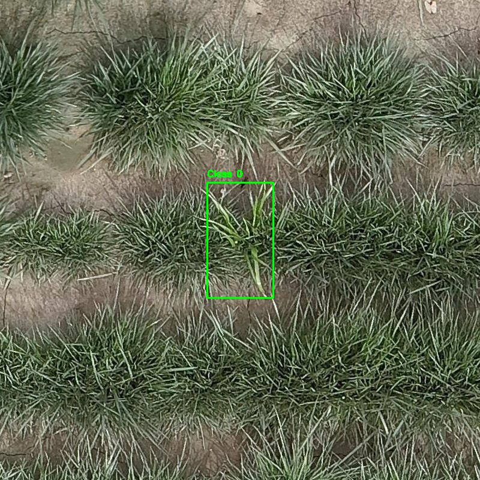
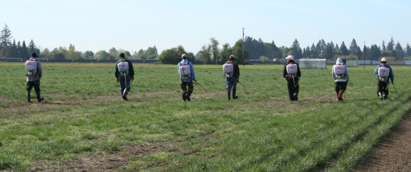
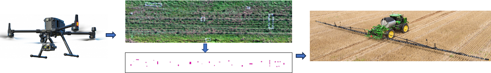

The Willamette Valley of Oregon, known as the cool-season grass seed capital of the world, produces over 90% of the nation's fescue and ryegrass seeds. Weed management is one of the top priorities for Oregon turfgrass seed growers. Not only can weeds reduce yield, but weed seeds reduce the quality of crop seeds. The purity standard for certified seed — 0.3% weed seed with no prohibited weeds — necessitates that growers maintain as weed-free fields as possible to minimize weed seed shatter into the soil or harvest with the crop (Oregon Seed Certification Service Handbook, 2023).
Weed management in grass seed crops is especially challenging because the primary weed species are grasses themselves. Currently, no selective post-emergent herbicides are labeled to adequately control grass weeds in grass seed crops. Although non-selective post-emergent herbicides such as glufosinate are labeled for grass, their full-rate application can cause severe crop phytotoxicity and excessive seed production loss, while reduced-rate broadcast applications compromise weed efficacy (OSU Extension Service et al., 2009). Additionally, the continuous use of the same herbicide active ingredients has led to herbicide-resistant weeds in Oregon (Bobadilla et al., 2021).

Current practice relies on costly hand spot spraying, where a crew of applicators with backpack sprayers walk through a field, identify weeds, and spray with a non-selective herbicide. The escalating costs and logistical challenges of hand labor underscore the pressing need for innovative weed management solutions that enhance efficiency, reduce dependency on manual labor, and ensure the economic viability of the agricultural industry.

This project develops an intelligent aerial-ground spot spraying system that integrates three core components:

By combining aerial imaging with AI-powered detection and precision ground application, this system replaces broad-spectrum herbicide applications and labor-intensive hand spraying with targeted, site-specific treatment — minimizing crop damage, reducing chemical inputs, and improving overall field management efficiency.